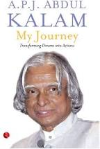

BOOKS AND DOCUMENTATION
Kalam's writings
- Developments in Fluid Mechanics and Space Technology by A P J Abdul Kalam and Roddam Narasimha; Indian Academy of Sciences, 1988
- India 2020: A Vision for the New Millennium by A P J Abdul Kalam, Y. S. Rajan; New York, 1998.
- Wings of Fire: An Autobiography by A P J Abdul Kalam, Arun Tiwari; Universities Press, 1999.
- Ignited Minds: Unleashing the Power Within India by A P J Abdul Kalam; Viking, 2002.
- The Luminous Sparks by A P J Abdul Kalam, by; Punya Publishing Pvt Ltd., 2004.
- Mission India by A P J Abdul Kalam, Paintings by Manav Gupta; Penguin Books, 2005.
- Inspiring Thoughts by A P J Abdul Kalam; Rajpal & Sons, 2007.
- Indomitable Spirit by A P J Abdul Kalam; Rajpal and Sons Publishing.
- Envisioning an Empowered Nation by A P J Abdul Kalam with A Sivathanu Pillai; Tata McGraw-Hill, New Delhi .
- You Are Born To Blossom: Take My Journey Beyond by A P J Abdul Kalam and Arun Tiwari; Ocean Books, 2011.
- Turning Points: A journey through challenges by A P J Abdul Kalam; Harper Collins India, 2012.
- Target 3 Billion by A P J Abdul Kalam and Srijan Pal Singh; December 2011 | Publisher Penguin Books .
- My Journey: Transforming Dreams into Actions by A P J Abdul Kalam; 2014 by the Rupa Publication.
- A Manifesto for Change: A Sequel to India 2020 by A P J Abdul Kalam and V Ponraj; July 2014 by Harper Collins.
- Forge your Future: Candid, Forthright, Inspiring by A P J Abdul Kalam; by Rajpal and Sons, 29 October 2014.
- Reignited: Scientific Pathways to a Brighter Future by A P J Abdul Kalam and Srijan Pal Singh; by Penguin India, 14 May 2015.
- Transcendence: My Spiritual Experiences with Pramukh Swamiji by A P J Abdul Kalam with Arun Tiwari; HarperCollins Publishers, June 2015
- Advantage India: From Challenge to Opportunity by A P J Abdul Kalam and Srijan Pal Singh; HarperCollins Publishers,15 Oct 2015.
Biographies
- Eternal Quest: Life and Times of Dr Kalam by S Chandra; Pentagon Publishers, 2002.
- President A P J Abdul Kalam by R K Pruthi; Anmol Publications, 2002.
- A P J Abdul Kalam: The Visionary of India by K Bhushan, G Katyal; A P H Pub Corp, 2002.
- A Little Dream (documentary film) by P. Dhanapal; Minveli Media Works Private Limited, 2008.
- The Kalam Effect: My Years with the President by P M Nair; Harper Collins, 2008.
- My Days With Mahatma Abdul Kalam by Fr A K George; Novel Corporation, 2009.
- A.P.J. Abdul Kalam: A Life by Arun Tiwari; Haper Collins, 2015.
- The People's President: Dr A P J Abdul Kalam by S M Khan; Bloomsbury Publishing, 2016.
Popular culture
In the 2011 Hindi film I Am Kalam, Kalam is portrayed as a positive influence on a poor but bright Rajasthani boy named Chhotu, who renames himself Kalam in honour of his idol.